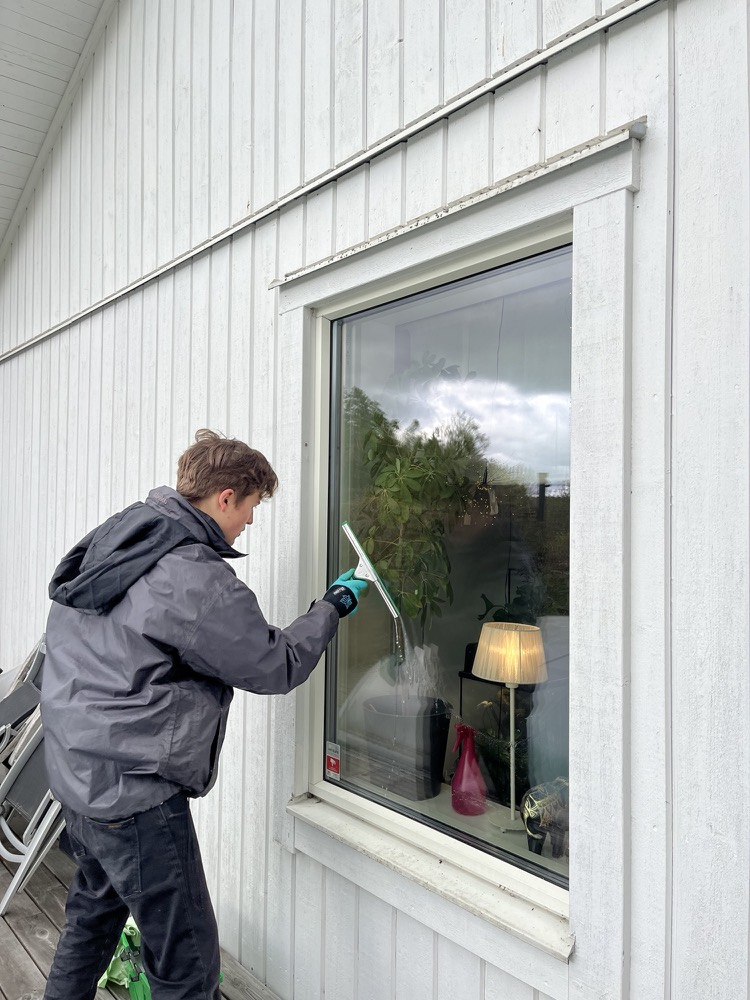

Jobba hos oss · Våren 2027
Ett extrajobb med utsikt.
Vill du ha ett praktiskt extrajobb där du arbetar tillsammans med andra och ser resultatet direkt? Berga Fönsterputs söker en medarbetare inför våren 2027.
- Ingen erfarenhet behövs
- Främst helger
- Åkersberga · Täby · Vaxholm

Lär dig ett hantverk
Extrajobb som fönsterputsare hos Berga Fönsterputs
Du arbetar tillsammans med Martin hos kunder i Åkersberga, Täby och Vaxholm. Vi lär dig fönsterputsning, hur utrustningen används och hur vi ger kunderna ett bra bemötande. Tidigare erfarenhet av fönsterputsning behövs inte.
Vi söker dig som:
- Har fyllt 18 år när anställningen börjar och har B-körkort.
- Vanligtvis kan arbeta på helger och ta dig till arbetspassen.
- Är noggrann, pålitlig och trevlig mot kunder.
- Trivs med fysiskt arbete både inomhus och utomhus.
- Vill lära dig och följer arbetsmetoder och säkerhetsrutiner.
Egen bil och erfarenhet av service eller praktiskt arbete är meriterande.
Ta första steget
Berätta lite om dig själv
Du behöver inget CV. Fält märkta med * är obligatoriska. Vi går igenom svaren manuellt och du kan ansöka även om du inte uppfyller alla krav.
Tack för din ansökan!
Vi har tagit emot den och hör av oss när vi har gått igenom ansökningarna.